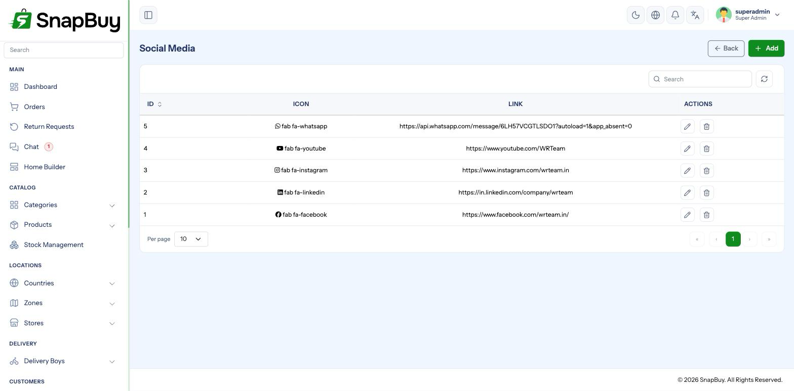

Social Media Links
Menu path: Settings → Social Media
The social profile links shown in the web portal footer and in the apps.

Adding a link
| Field | Notes |
|---|---|
| Platform / Name | Facebook, Instagram, X, YouTube, WhatsApp, LinkedIn |
| URL | The full profile address |
| Icon | Displayed beside the link |
| Status | Inactive links are hidden |
Use the full URL including https://
instagram.com/yourstore is treated as a relative path and sends customers to a broken page on your own domain. Enter https://www.instagram.com/yourstore.
Only list profiles you actually maintain
A link to an account last posted to two years ago reads worse than no link. Deactivate rather than delete, so you can bring it back.
For a "chat with us" link, use the wa.me format with the number in international form, no spaces or symbols:
https://wa.me/919876543210Not the same as in-app chat
This opens WhatsApp on the customer's device. It is unrelated to SnapBuy's built-in chat, which is real-time messaging inside the app tied to orders.
Ordering
Links display in the order listed. Put the platforms you are most active on first.
Troubleshooting
| Symptom | Cause | Fix |
|---|---|---|
| Link goes to your own site | URL missing https:// | Enter the full URL |
| Link not visible | Status inactive | Activate it |
| Icon missing | Icon not selected | Choose one |
| Change not visible on the website | Storefront cache or rebuild needed | Hard-refresh; rebuild if statically generated |